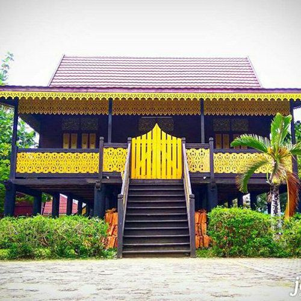

About Jambi
Capital City in Jambi City
Jambi: The Land of Melayu Jambi and Ancient Civilizations
Jambi, located on the eastern coast of central Sumatra, is a province rich in history, culture, and natural beauty. From the ancient Muaro Jambi temple complex to the majestic Mount Kerinci and the flowing Batanghari River, Jambi offers a fascinating journey through time and nature.
A Legacy of Ancient Civilizations:
Jambi is home to the Muaro Jambi temple complex, one of the largest and most important ancient temple sites in Southeast Asia, showcasing the influence of the Srivijaya kingdom.
Melayu Jambi Culture:
Jambi has a rich Melayu cultural heritage, reflected in:
- Language: Melayu Jambi is the local dialect spoken alongside Indonesian.
- Traditional Arts: Jambi has various traditional dances, music, and crafts, including songket weaving and wood carving.
- Customs and Traditions: Local customs and traditions play an important role in community life, including ceremonies and festivals.
Natural Wonders and Biodiversity:
Jambi is blessed with diverse natural landscapes:
- Mount Kerinci: The highest volcano in Indonesia, offering stunning views and trekking opportunities. It is part of the Kerinci Seblat National Park.
- Batanghari River: The longest river in Sumatra, historically important for trade and transportation.
- Kerinci Seblat National Park: A UNESCO World Heritage Site, home to diverse flora and fauna, including Sumatran tigers, elephants, and rhinos.
Economic Potential:
Jambi's economy is supported by agriculture (rubber, palm oil), mining (coal), and tourism.
Jambi Today:
Jambi continues to develop its infrastructure and economy while preserving its cultural heritage and natural environment. The province is also focusing on sustainable tourism development.

Jambi: A Journey Through Time, Culture, and Nature
Jambi offers a unique blend of ancient history, rich culture, and stunning natural landscapes. Here's a deeper look:
Historical Perspective
Srivijaya Influence: The Muaro Jambi temple complex testifies to the strong influence of the Srivijaya kingdom in the region's past.
Malay Sultanates: Jambi was also part of various Malay sultanates, contributing to its cultural heritage.
Cultural Heritage
Traditional Arts and Crafts: Songket weaving, with its intricate patterns and gold threads, is a prominent craft in Jambi.
Local Traditions and Festivals: Various traditional ceremonies and festivals are celebrated throughout the year, showcasing Jambi's cultural richness.
Natural Environment and Biodiversity
Kerinci Seblat National Park: This national park is a biodiversity hotspot, home to endangered species and diverse ecosystems.
Batanghari River: This vital waterway has played a crucial role in Jambi's history and continues to be important for transportation and livelihoods.
Jambi in the Modern Era
Jambi is actively developing its tourism sector, promoting its cultural and natural attractions. Sustainable development and environmental conservation are also key priorities for the province.
